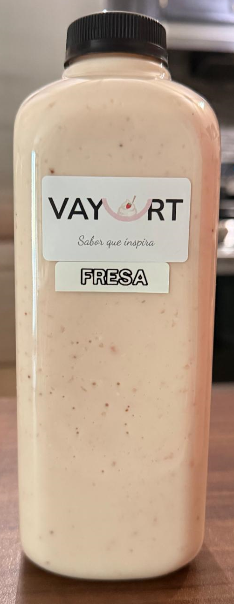
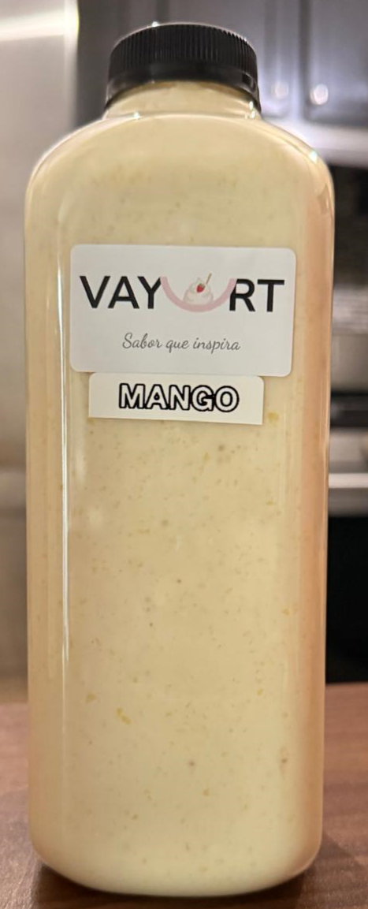
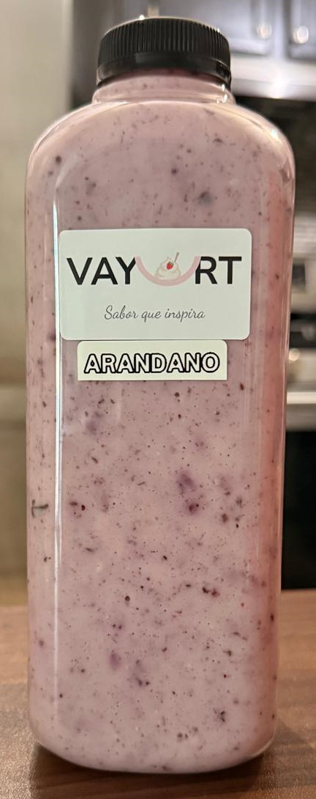
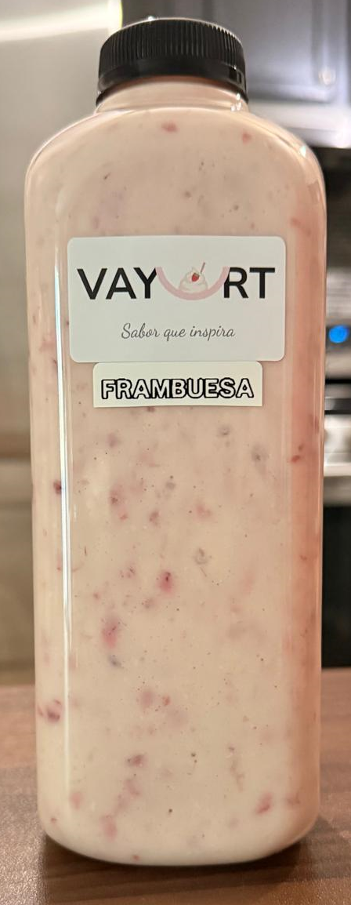
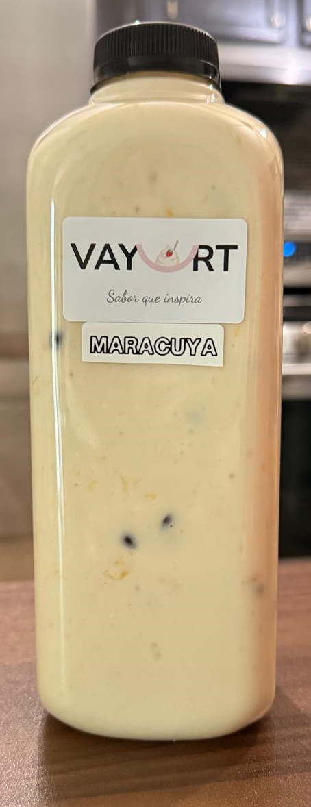
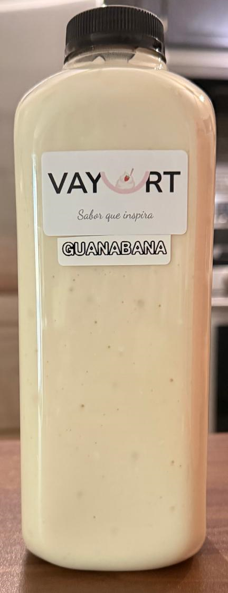
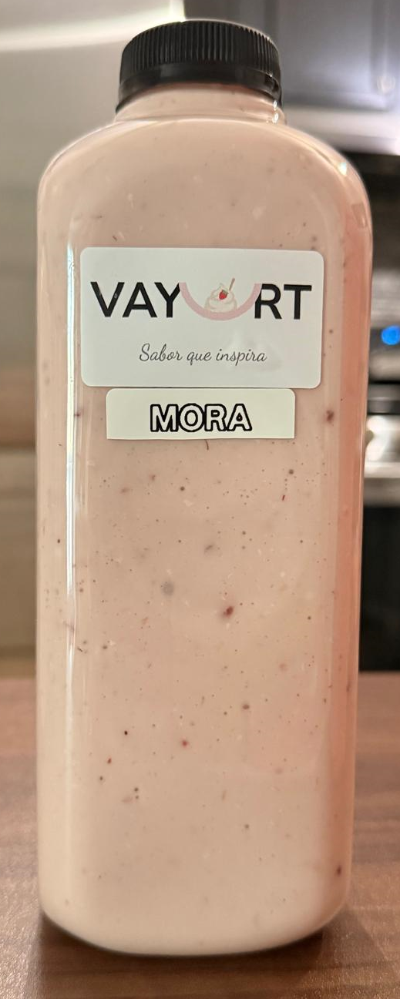

¡Disfruta el sabor auténtico y casero de Colombia en cada litro!
En Vayurt elaboramos yogurt artesanal, saludable y listo para consumir. Perfecto para tus desayunos, meriendas o snacks.
En Vayurt, preparamos cada lote siguiendo recetas tradicionales colombianas, heredadas de generación en generación. Seleccionamos ingredientes frescos, fermentamos de manera natural y embotellamos cuidadosamente para mantener todos los beneficios y el sabor inigualable.
Sabores Regulares: Fresa, Mango, Arándanos, Frambuesa
Sabores Especiales: Maracuya, Guanabana, Mora







¿Quieres probar Vayurt o conocer nuestros precios y promociones?
¡Contáctanos y te responderemos rápido para ayudarte a elegir el mejor sabor!